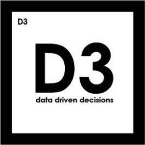

Trade Mark Journal No.2025/032 8 August 2025
UK00004205770 19 May 2025 (9,35,41)

- Class 9
- Search marketing software; Software for use in advertising; Optimisation software; Software for pay per click optimisation.
- Class 35
- Marketing; Advertising and marketing; Advertising and marketing consultancy; Influencer marketing; Marketing consulting; Marketing consultancy; Marketing forecasting; Advertising and marketing services; Marketing analysis; Digital marketing; Marketing research; Business marketing consultancy; Marketing services; Advertising, marketing and promotion services; Marketing, advertising and promotion services; Promotional marketing; Product marketing; Advertising, marketing and promotional services; Advertising, promotional and marketing services; Marketing, advertising, and promotional services; Affiliate marketing; Referral marketing; Business marketing services; Online marketing; Financial marketing; Marketing analysis services; Marketing research services; Internet marketing; Marketing information; On-line advertising and marketing services; Database marketing; Investigations of marketing strategy; Marketing studies; Business marketing consulting services; Research services relating to advertising and marketing; Marketing agency services; Consultancy services relating to advertising, publicity and marketing; Design of marketing surveys; Planning of marketing strategies; Marketing management advice; Targeted marketing; Consultancy services in the field of affiliate marketing; Promotion, advertising and marketing of on-line websites; Direct marketing consulting; Analysis of marketing trends; Advice in the field of business management and marketing; Advertising copywriting; Marketing research and analysis; Marketing research or analysis; Marketing advice; Consultancy relating to marketing; Advertising, marketing and promotional consultancy, advisory and assistance services; Consulting services in the field of Internet marketing; Development of marketing concepts; Providing marketing consulting in the field of social media; Marketing advisory services; Consultancy regarding advertising communications strategy; Advertising services for the promotion of e-commerce; Event marketing; Promotion [advertising] of business; Marketing assistance; Modeling services for advertising or sales promotion; Creative marketing plan development services; Business marketing consultation services; Dissemination of advertising, marketing and publicity materials; Planning services for marketing studies; Recruitment services for sales and marketing personnel; Promotional marketing services using audiovisual media; Marketing in the framework of software publishing; Distribution of advertising, marketing and promotional material; Marketing plan development ; Modeling for advertising or sales promotion; Direct marketing; Direct marketing services; Development of marketing strategies and concepts; Marketing services in the field of web site traffic optimization; Modelling for advertising or sales promotion; Advertising and marketing services provided by means of social media; Consumer profiling for commercial or marketing purposes; Providing business marketing information; Consulting services relating to marketing; Business advice relating to strategic marketing; Professional consultancy relating to marketing; Search engine marketing services; Providing advice in the field of business management and marketing; Outsourcing services in the field of business analytics; Consultancy relating to demographics for marketing purposes; Market research and marketing studies; Analysis relating to marketing; Copywriting for advertising and promotional purposes; Preparation of marketing surveys; Marketing consultation services; Advertising and marketing services provided via communications channels; Business consultancy services relating to the marketing of fund raising campaigns; Business advice relating to marketing; Marketing (Business advice relating to -); Real estate marketing analysis; Statistical evaluations of marketing data; Marketing services in the field of travel; Consultancy regarding advertising communication strategies; Advertising research; Advertising and marketing services provided by means of blogging; Advertising analysis; Information or enquiries on business and marketing; Advertising research services; Consultancy relating to business advertising; Marketing services in the field of restaurants; Advice relating to marketing management; Marketing services in the field of dentistry; Digital advertising services; Trade marketing [other than selling]; Consulting services in the field of development of advertising concepts; Business advice relating to marketing management consultations; Brand creation services (advertising and promotion); Advertising and promotion services; Consulting in sales techniques and sales programmes; Advisory services relating to marketing; Advertising planning; Estimations for marketing purposes; Market research for advertising; Advertising; Planning services for advertising; Developing promotional campaigns for business; Conducting of marketing studies; Conducting marketing studies; Administration relating to marketing; Advertising and promotion services and related consulting; Modelling and models for advertising or sales promotion; Business management consultancy via the Internet; Advertising and promotional services; Promotional and advertising services; Promotional advertising services; Provision of marketing information; Preparation of reports for marketing; Sales promotion using audiovisual media; Sales management services; Copywriting; Development of advertising concepts; Business strategy services; Advertising and publicity services; Brand strategy services; Consultancy relating to advertising and promotion services; Recruitment advertising; Publicity and sales promotion services; Provision of marketing reports; Analysis of advertising response and market research; Business management analysis; Strategic business analysis; Business analysis; Analysis of advertising response; Business statistical analysis; Business analysis and information services, and market research; Advice concerning chemical product marketing; Development and implementation of marketing strategies for others; Analysis of business trends; Analysis of business statistics; Preparation of marketing plans; Consultancy relating to business analysis; Business analysis services; Market analysis and research services; Market research and analysis services; Market research and business analyses; Analysis of business information; Analysis of business management systems; Modelling agency services for sales promotion purposes; Rental of all publicity and marketing presentation materials; Analysis of the public awareness of advertising; Search engine optimisation; Consultancy relating to search engine optimisation; Search engine optimisation services; Search engine optimisation for sales promotion; Website traffic optimisation; Search engine optimization; Search engine optimization for sales promotion; Website traffic optimization; Web site traffic optimisation; Web site traffic optimization; Consultancy relating to business efficiency; Benchmarking (evaluation of business organisation practices); Business process management consultancy; Analysis of company behaviour; Consultancy relating to business management and organisation; Data processing, systematisation and management; Benchmarking services; Modelling agency services relating to advertising; Assessment analysis relating to business management.
- Class 41
- Training courses in strategic planning relating to advertising, promotion, marketing and business; Training services relating to retail marketing.
DATA DRIVEN DECISIONS LTD